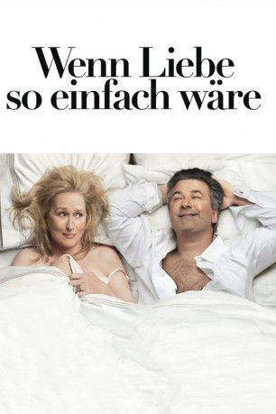

#4755 Wenn Liebe so einfach wäre
Alternativ: It's Complicated
 
 IMDB-Wertung: 6.6 / 10
IMDB-Wertung: 6.6 / 10  Metascore: 0
Metascore: 0 
Die Bäckerin und Koch-Akrobatin Jane Adler (Meryl Streep) führt ein sauberes Single-Leben in Santa Barbara. Nach einem tête-à-tête mit ihrem Ex-Mann Jake (Alec Baldwin) gerät der bürgerliche Alltag jedoch gehörig durcheinander. Der alternde Anwalt hat die Nase voll von seiner neuen Flamme Agness (Lake Bell), auf Kinder mit der nörgeligen Dame kann er gut verzichten. Der überraschende Rückfall des Ex-Ehepaares wächst zur Affäre aus, die vorerst selbst ihren Kindern verschwiegen wird. Zu allem Überfluss betritt dann auch noch Innenarchitekt Adam (Steve Martin) die Bühne und macht Jane schöne Augen. Als der Schwiegersohn in spe (John Krasinski) Wind von der elterlichen Revue bekommt, ist das Beziehungsgeflecht längst zum babylonischen Wirrwarr geworden...
Jahr: 2009
Dauer: 120 Minuten
FSK: 12
Land: USA Studio: UniversalTonspuren: DTS - ,
Untertitel: Deutsch,
Auflösung: 1080p (1920x1040) Größe: 10547 MB
Genre: Komödie, Drama, Liebe
Regisseur:  Nancy Meyers
Nancy Meyers
Drehbuch: Jemaine Clement
Soundtrack:
Darsteller:
 Meryl Streep als Jane Adler
Meryl Streep als Jane Adler Steve Martin als Adam Schaffer
Steve Martin als Adam Schaffer Alec Baldwin als Jake Adler
Alec Baldwin als Jake Adler John Krasinski als Harley
John Krasinski als Harley Lake Bell als Agness Adler
Lake Bell als Agness Adler Mary Kay Place als Joanne
Mary Kay Place als Joanne Rita Wilson als Trisha
Rita Wilson als Trisha Alexandra Wentworth als Diane
Alexandra Wentworth als Diane Hunter Parrish als Luke Adler
Hunter Parrish als Luke Adler Zoe Kazan als Gabby Adler
Zoe Kazan als Gabby Adler Caitlin FitzGerald als Lauren Adler
Caitlin FitzGerald als Lauren Adler Emjay Anthony als Pedro Adler
Emjay Anthony als Pedro Adler Nora Dunn als Sally
Nora Dunn als Sally Bruce Altman als Ted
Bruce Altman als Ted Robert Curtis Brown als Peter
Robert Curtis Brown als Peter James Patrick Stuart als Dr. Moss
James Patrick Stuart als Dr. Moss Peter Mackenzie als Dr. Allen
Peter Mackenzie als Dr. Allen Pat Finn als Hotel Doctor
Pat Finn als Hotel Doctor- Heitor Pereira als Party Musician
- Ramin Djawadi als Party Musician
- Sean Hamrin als Oliver
 Valente Rodriguez als Reynaldo
Valente Rodriguez als Reynaldo- Emily Kinney als Waitress
- Zack Robidas als Hotel Reception Clerk
- Lisa Masters als Woman in Elevator
 Andrew Stewart-Jones als Restaurant Host
Andrew Stewart-Jones als Restaurant Host- Jennifer Restivo als Woman at Bar
- Dana Power als Woman at Bar
 Michael Rivera als Eddie
Michael Rivera als Eddie- Blanchard Ryan als Woman at Fertility Clinic
 Geneva Carr als Woman at Fertility Clinic
Geneva Carr als Woman at Fertility Clinic Deidre Goodwin als Fertility Nurse
Deidre Goodwin als Fertility Nurse- Rosalie Ward als Biltmore Reception Clerk
 Jessica St. Clair als Wedding Specialist
Jessica St. Clair als Wedding Specialist Marina Squerciati als Melanie
Marina Squerciati als Melanie- Ricardo Chacon als Police Officer
- Michael Yavnielli als Police Officer
- Robert Adamson als College Kid at Party
- Ava Allan als Christmas Tree Shopper , uncredited
- Giovanni Cirfiera als Businessman , uncredited
- Debra Lord Cooke als Principal Dancer , uncredited
- Michelle Liu Coughlin als Woman at Fertility Clinic , uncredited
- Molly Culver als Adam's Girlfriend in Dream , uncredited
 Alan Cumming als TV Actor , uncredited
Alan Cumming als TV Actor , uncredited- Cynthia Daddona als Upscale Farmer's Market Shopper , uncredited
- Michael Dean als Upscale Café Patron , uncredited
- Katherine Dickson als Passenger , uncredited
- Lisa Finn als Girl , uncredited
- Meryl Hathaway als Bakery Server , uncredited
 William James Kelly als Graduation Guest , uncredited
William James Kelly als Graduation Guest , uncredited
Datei: X:\2009(N-Z)\Wenn Liebe so einfach wäre (2009, FSK12, 1920x1040).mkv seit 14.11.2016
Festplatte: HD 2009(G-Z)-2010(A-F)
 Es gibt insgesamt 99 Filme in der Gruppe '2009(N-Z)'
Es gibt insgesamt 99 Filme in der Gruppe '2009(N-Z)'